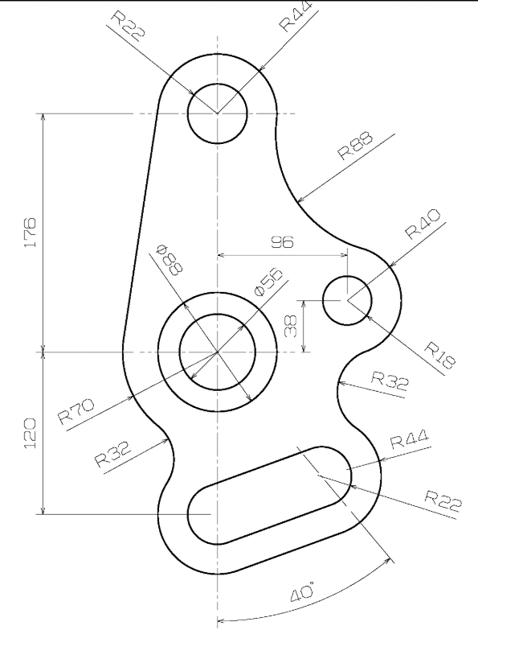
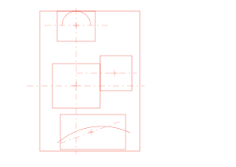

M40c Guide Overlay Review
Reference image with the authored mechanical-exercise-m40c.guide.toml
visualization overlaid in red. This is a browser-side review surface used because the current
MachinaCanvas UI/browser automation path exposes guide file inputs but does not provide a clean
automated file-attach workflow here.


Prior note to keep in mind: the other Codex author wrote that a global mask only helps if it prevents drift before curve authoring. This review checks whether the current guide actually does that.